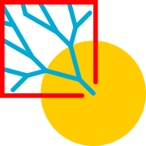

關於 | 集水區觀察員
一般戶外活動，無論溪降、溯溪、獨木舟、登山、攀岩，只要過程中必須接觸溪流或溪溝，不清楚水域水流多少時，了解此水道上游供給水份的集水面積大小，作為初步潛在水量的參照。但如何不數格子就能得知集水區大小呢？
集水區觀察員 (Flow Catchment Observer) 讓你快速查詢流域集水面積； 使用內政部
2025、2024、
2022（更新區域） 、
2020、
2016
20m 數值地形高程原始資料，以
Grass GIS
，推估逕流累積集水面積後，以 GDAL/OGR 轉換為圖磚，提供有網路環境下快速查詢集水區的方式，對於手邊缺乏實體紙本地圖者能省略繁瑣的查詢步驟，
此外，亦介接經濟部地質調查及礦業管理中心（原中央地質調查所）提供的 API 供查閱岩質。
台灣區集水區圖磚 github 專案 - accTW
圖台依縮放倍率切換常用底圖
- zoom = 8-12
- 臺灣通用電子地圖
- zoom = 13
- 經建版十萬分之一基本地形圖
- zoom = 14
- 經建版五萬分之一基本地形圖
- zoom = 15
- 經建版兩萬分五千之一基本地形圖
- zoom = 16
- Happyman版魯地圖白底
- zoom = 17-20
- 正射影像、光達影像、農航航拍
20公尺網格數值地形模型DTM資料來源
- MOI 2025
- 台灣本島、琉球、蘭嶼、澎湖、金門
- MOI 2020
- 綠島、龜山島
- MOI 2016
- 樂山（補）
使用案例
版本紀錄
- 2025/12/31
- 更新高程、集水區資訊 (MOI2025)
- 2025/04/22
- 更新加入 NLSC 光達 2024 圖層
- 2024/08/22
- 更新水位站點
- 2024/08/21
- 更新高程、集水區資訊 (MOI2024)
- 2024/08/15
- 加入海圖，參照海圖圖例
- 2024/08/14
- 更新加入 NLSC 光達 2023 圖層
- 2024/08/01
- 加入最新 ASRS ATIS 農航空拍影像
- 2024/07/30
- 支援嵌入iframe之外部網站改以對話方塊開啟，簡化 WPA 應用程式安裝後的操作。
- 2024/07/26
- 加入氣象署雨量相關圖層。
- 2024/07/20
- 灰色突現動態波浪，設定為每秒鐘一個週期，並可選擇適合的週期高差，便於航行或溯行坡度觀察。
- 2024/07/10
- 新增水線自選，凸顯需要的大小區間篩選集水區。
- 2024/07/08
- 修正彩色水線圖層於行動裝置產圖的浮點數精度誤差至 0.1 平方公里。
- 2024/06/26
- 支援電腦瀏覽器拖入 gpx 網址開啟。
- 2024/06/20
- 修正複製至剪貼簿與地質查詢功能
- 2024/04/27
- 加入外部 CORS proxy 的等待動畫
- 2024/02/10
- 重寫 Codis 讀取資料方式，透過外部 CORS proxy
- 2023/10/20
- 配合氣象局 cwb 轉移至氣象署 cwa 外連 URL 更新。修正地質圖層來源，配合服務網址變更。
- 2023/08/07
- 加入 農航圖層， NLSC 最新兩萬五、五萬、十萬基本地形圖層(Z=15,14,13)，更新水位站點。
- 2023/07/05
- 更新加入 NLSC 光達 2022 圖層。
- 2023/02/02
- 更新高程資訊 (MOI2022)
- 2023/01/30
- 新增澎湖金門集水區資訊、更新台灣本島集水區資訊 (MOI2022)。
- 2023/01/04
- 桌面版新增 gpx 匯入功能，直接拖拉 gpx 進入集水區觀察員後開啟。
- 2022/12/29
- 匯入水情影像雲端平台部分即時影像：水利署自建站(298)、縣市政府水情(1244)、水利署河川監管(259)、重點防汛工程影像(23)、淹水感測器影像(84)、水土保持局(78)、第四台業者(15)、移動站影像(1)、保全監視影像(8)、滯洪池(89)、抽水站影像(228)、破堤申請案件(9)、水利建造物監測設備影像(6)、
- 2022/10/19
- 重整水線顏色呈現，分離划船與登山取水用途著色
- 2022/07/08
- 新增氣象局Codis 雨量資料連結
- 2022/04/22
- 新增水位站週資料按鈕
- 2021/11/14
- 新增河道著色（依集水區面積）
- 2021/11/02
- 新增水庫堤堰流量，觀察定點流量 m³/s (cms)
- 2021/10/26
- 新增水利署與氣象局的開放資料，取得水位站與雨量站資訊呈現圖上，並連結外部歷史資料。